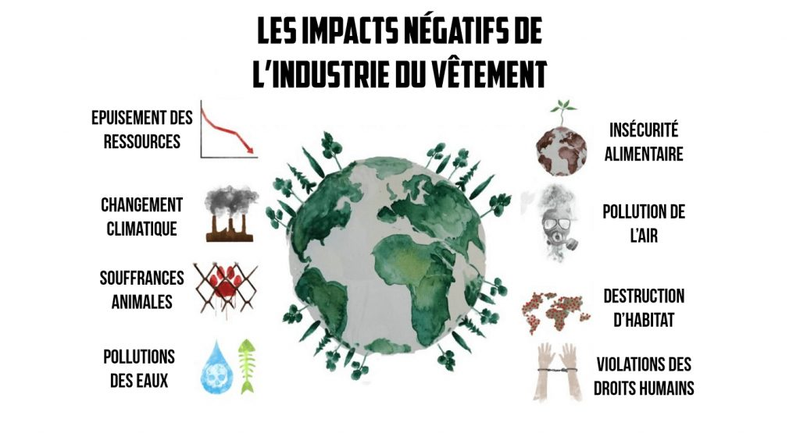
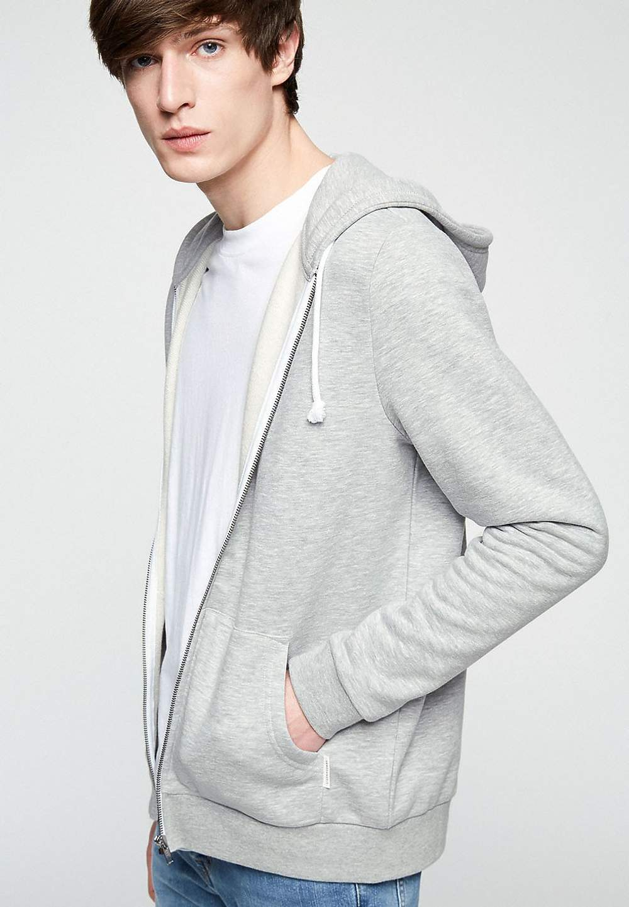
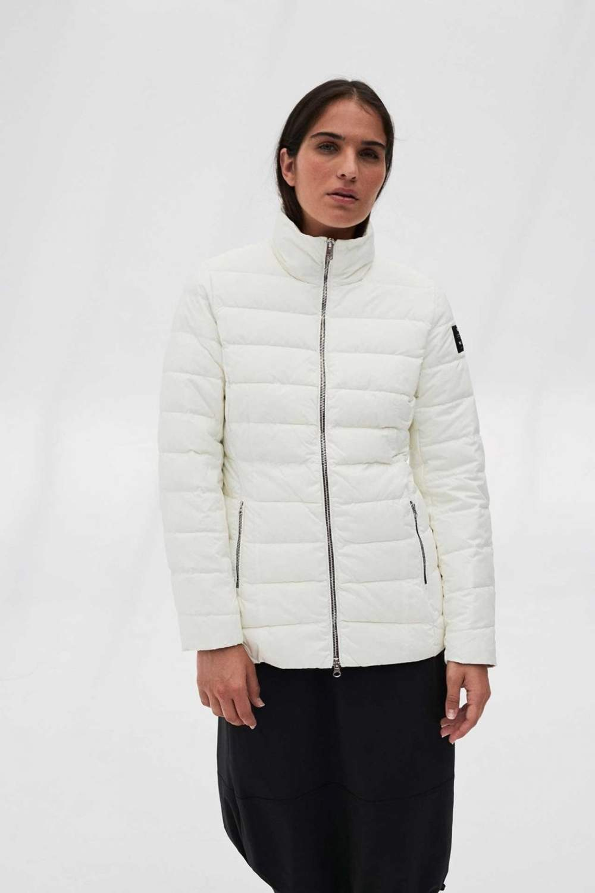
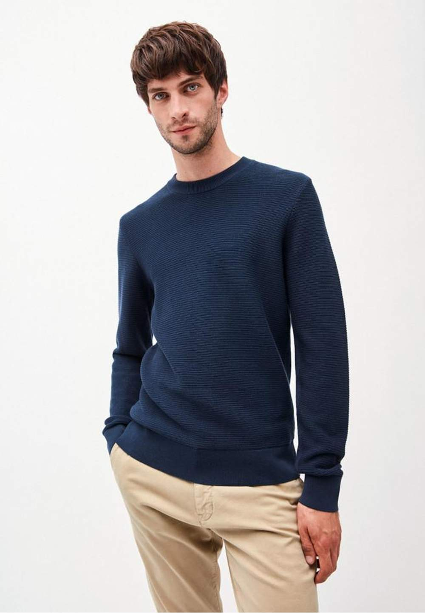
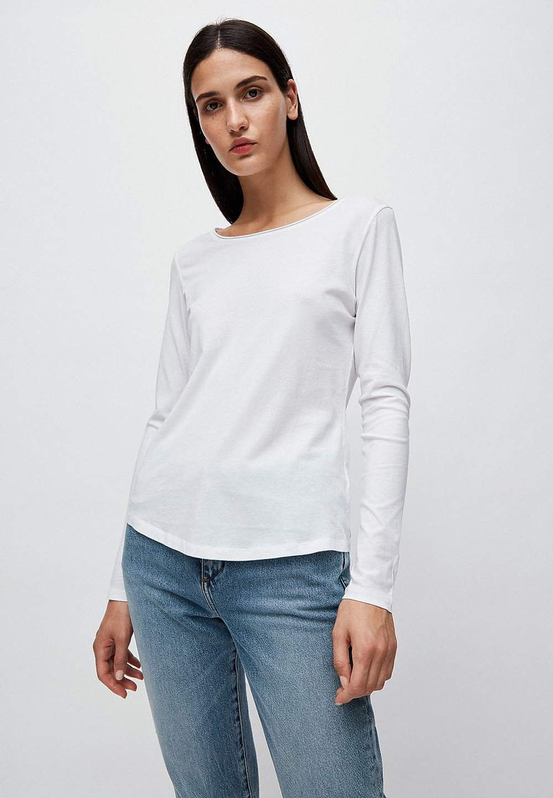

Green Dressing
Green Dressing is an innovative website, grouping together multiple eco-friendly clothing brands. We want to make the textile industry as environmentally friendly as possible. It's all about changing consumption and manufacturing habits

ONLINE STORE

Veste zippée grise en coton bio et polyester recyclé - joaa
buy it

Doudoune blanche en polyester recyclé - new kily
buy it

Pull marine en coton bio - aatu ottomaan
buy it

T-shirt manches longues blanc en coton bio - rojaa
buy it